Overview
ME 370 — Mechanical Design
University of Illinois Urbana-Champaign, May 2026
Team 17: Matthew Figula, Tommy Boetto, Diego Urenda, Manav Chopda
Project Dawnstar II — nicknamed "Peanut the White Elephant" — is a single-motor autonomous walker designed to transport a payload across alien terrain. The creative brief: an elephant crossing an exoplanet in search of a single peanut. Beneath the theme is a fully mechanical drivetrain that coordinates locomotion and payload handling from one 12 V brushed DC motor with no electrical sequencing whatsoever.
My contributions spanned the frame and leg geometry design, gear-train design and ratio selection, and all eleven Fusion 360 engineering drawings produced to ASME Y14.5M-2018. I also maintained the master CAD assembly throughout the project.

Project Video
Goal & Specifications
Design and build a single-motor autonomous walker that picks up a payload, traverses a multi-terrain course, and releases the payload — all from a single toggle-switch input, with no further user interaction.
- Payload: carry one object ≥10 cm³, non-adhesive and non-magnetic, from a loading zone to an unloading zone
- Envelope: fit within 18 × 18 × 30 cm; the final walker measures ~17 × 14 × 14 cm assembled
- Power unit: 12 V brushed DC motor, eight 1.2 V NiMH cells, toggle switch — single user input runs the complete pickup-traverse-release cycle
- Budget: ≤$60 materials; final build came in at $42.11
- Constraints: no Jansen mechanisms, no powered wheels; must carry a clear visual theme
Key Contributions & Skills
- Mechanical Design: six legs implemented as four-bar linkages, three per side, phased 120° apart to guarantee static stability at every crank angle; angled laser-cut plywood chassis
- Drivetrain: single-stage 3:1 spur-gear reduction (12-tooth pinion → 36-tooth gear) with three idler gears for packaging efficiency and torque-ripple smoothing
- Dispensing Mechanism: dual Geneva drive converting continuous crank rotation into intermittent indexed motion — timing payload pickup and release entirely mechanically from the same motor shaft
- Analysis: dynamic position-velocity-acceleration (PVA) analysis of the leg four-bar linkage, validated to within 0.9% power balance
- CAD & Documentation: full Fusion 360 master assembly, eleven ASME Y14.5M-2018 engineering drawings, BOM, and expense report
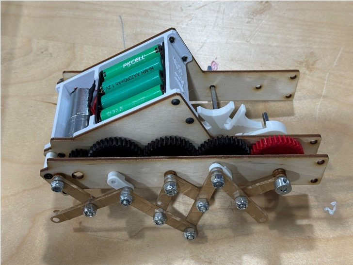
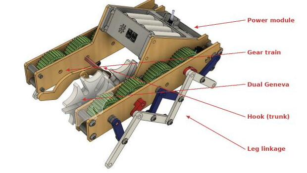
Design Highlight — Dual Geneva Drive
The central challenge was coordinating locomotion with payload pickup and release from a single motor with no electronic sequencing. A Geneva drive converts continuous rotation into intermittent, indexed motion — exactly what is needed to lock the hook arm in the pick-up and release positions while the legs keep walking.
We chose two Geneva mechanisms instead of one for three concrete reasons: peak hook acceleration and jerk are cut by approximately 50% because the load is split across two simultaneous pin-slot contacts; wear is shared across both star wheels, roughly doubling service life; and the two dwell windows can be tuned independently to dial in precise pickup and release timing. The trade-off is more parts and tighter alignment tolerances — a cost we judged well worth the reliability gain.
Design Evolution:
- Single → Dual Geneva: the first iteration used a single Geneva; after computing peak indexing accelerations analytically we added a second star wheel to halve the peak loads and smooth the indexing profile
- Leg phasing validation: one four-bar leg was analysed and tested in isolation before integrating all six legs at 120° phase offsets to confirm static stability was maintained throughout the full crank cycle
- Drift diagnosis: initial 100-inch test runs showed a consistent leftward drift; root-cause analysis identified an off-centre battery pack shifting the lateral centre of mass; re-centring the battery on the chassis centreline reduced residual drift to under 5 cm over the full course
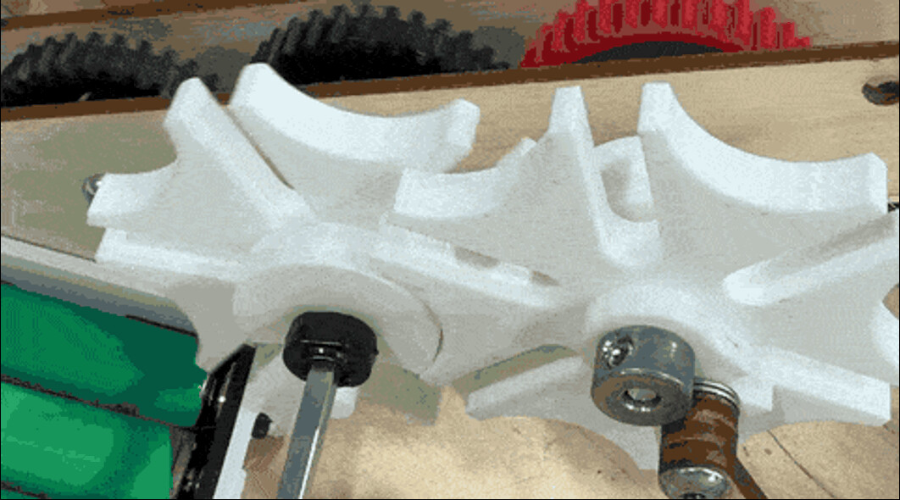
Analysis & Performance
Dynamic Force Analysis:
- Peak motor torque: 12.3 mN·m (occurring at −20° crank angle)
- Peak joint force: 0.65 N
- Peak motor power: 0.36 W — within rated output throughout the full cycle
- Power balance validation: input vs. output power balanced to within 0.9%, confirming the kinematic and dynamic model
Measured Performance:
- Course speed: traversed the 100-inch (2.54 m) course in ~15.5 s → 16.4 cm/s average; predicted speed was ~20 cm/s (≈18% gap explained by foot–ground friction excluded from the model, NiMH voltage sag under load, and early-stroke foot slippage)
- Terrain capability: successfully handled grass, pebbles, hills, and ramp terrains with reliable payload pickup and release on every run
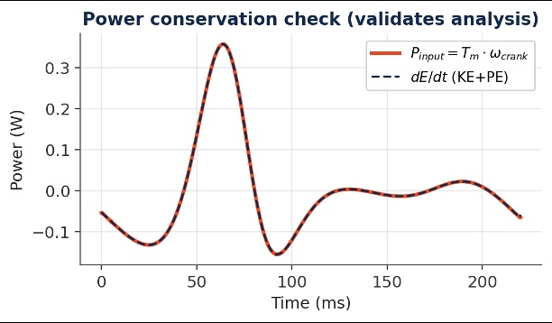
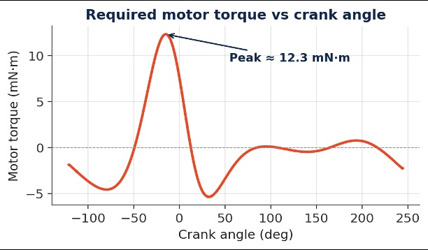
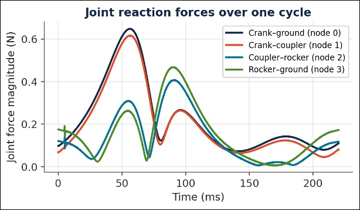
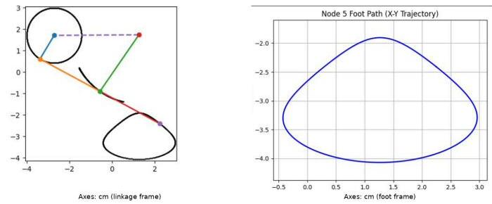
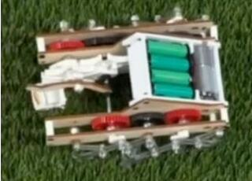
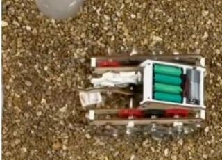
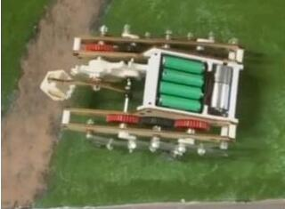
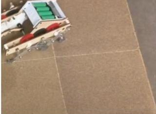
Relevance
Dawnstar II demonstrates a concentrated set of mechanical engineering competencies applied under real course constraints:
- Single-actuator mechanical coordination: timing two distinct machine events (locomotion and payload handling) from one shaft, with zero electronics, shows mastery of mechanism synthesis and sequencing
- Kinematic & dynamic analysis: the PVA study and 0.9% power-balance validation demonstrate the ability to build and verify analytical models before cutting parts
- Design-for-manufacture: all structural parts are either laser-cut plywood or FDM-printed, keeping the BOM under $42 while meeting every dimensional and functional spec
- Iterative prototyping and root-cause debugging: the drift diagnosis (off-centre battery → re-centred, residual <5 cm) exemplifies structured troubleshooting under a real test condition
- Clear creative communication: the wildlife-documentary theme unified the team's design language and made the engineering decisions legible to a non-technical audience
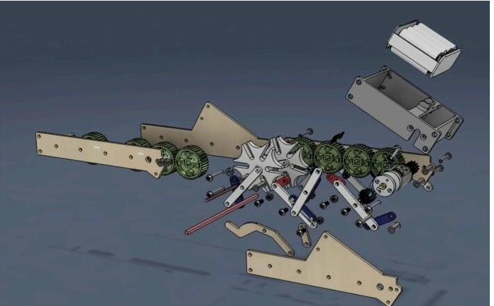